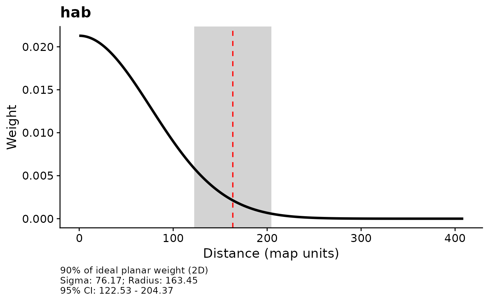
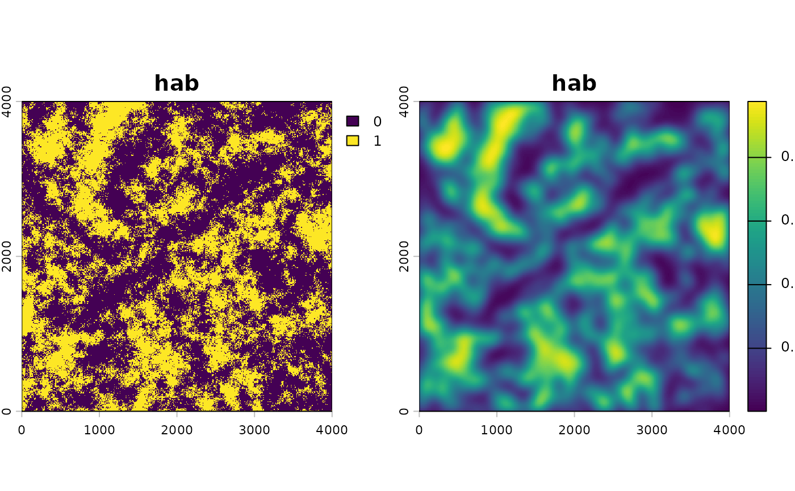
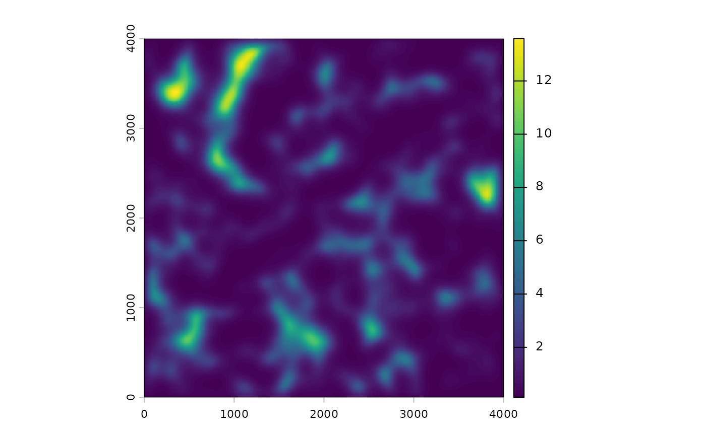

Identifies the kernel scale of effect (sigma) for each raster
covariate by maximizing the log-likelihood of a fitted statistical model.
Repeatedly replaces kernel-weighted covariate values at different scales and
refits the model, using optim (or optimParallel for parallel
execution) with the L-BFGS-B algorithm.
Usage
multiScale_optim(
fitted_mod,
kernel_inputs,
join_by = NULL,
par = NULL,
start_strategy = c("single", "screen"),
screen_n_sigma = 5,
screen_n_jitter = 6,
screen_maxit = 8,
screen_jitter_sd = 0.5,
n_cores = NULL,
PSOCK = FALSE,
verbose = TRUE,
refit_fn = NULL
)Arguments
- fitted_mod
A fitted model object whose covariates include the kernel-weighted variables defined in
kernel_inputs. Supported classes includelm,glm,gls(nlme), andunmarkedFit(unmarked). Many other model classes are also supported viastats::update()or a customrefit_fn. A predictor cannot be named"x", which is reserved for internal coordinate data.- kernel_inputs
A list of class
"multiScaleR_data"created bykernel_prep. Must contain elementsraw_cov,d_list,min_D,max_D,unit_conv, andkernel.- join_by
Default:
NULL. Forunmarkedmodels, a data frame with one unique key row per spatial site inkernel_inputs, in the same order as those sites. Its named key columns must also occur in the fitted model'ssiteCovs. Use it when model rows repeat sites, such as one row per site and year. See Details.- par
Optional numeric vector of starting values for the optimizer. Values must be divided by
max_Dto match the internal scaled parameter space. Length must equal the number of optimized covariates (or twice that forkernel = "expow", where shape parameters follow sigma parameters). Default:NULL; starting values are chosen automatically.- start_strategy
Character. How to choose starting values when
par = NULL:"single"(default) uses one shared default start, while"screen"performs a low-cost prescreen of sigma values and short screening optimizations before launching one full optimization.- screen_n_sigma
Positive integer. Number of log-spaced sigma values evaluated per covariate during the prescreen when
start_strategy = "screen". Default:5.- screen_n_jitter
Non-negative integer. Number of jittered candidate starts evaluated with short screening optimizations after the marginal prescreen. Default:
6. Set to0to skip the short jittered runs.- screen_maxit
Positive integer. Maximum iterations used for each short screening optimization. Default:
8.- screen_jitter_sd
Non-negative numeric scalar. Standard deviation of multiplicative sigma jitter on the log scale during screening. Default:
0.5.- n_cores
Positive integer. Number of cores for parallel optimization via
optimParallel. Default:NULL(single-threaded). Whenstart_strategy = "screen", the samen_coressetting is also used for short screening attempts before the full optimization. Parallel optimization is beneficial for models with many covariates or slow log-likelihood evaluations. Whenn_cores > 1,multiScale_optim()checksestimate_multiscale_ramand stops before screened starts or worker creation if the requested workers exceed the conservative RAM-based limit for the current inputs. Usen_cores = 1for serial execution, or rebuild inputs withkernel_prep(..., bin = TRUE, store_cell_data = FALSE)for lean mode when every covariate is kernel-weighted. Landscape and surface metrics cannot use lean mode. An unavailable RAM estimate does not block the run; a passing estimate does not guarantee sufficient memory. No worker count is reduced automatically.- PSOCK
Logical. On Windows, a PSOCK cluster is always used. On Unix, a FORK cluster is used by default (faster). Set
TRUEto force a PSOCK cluster on Unix. Default:FALSE.- verbose
Logical. Print optimization status and warnings to the console. Default:
TRUE.- refit_fn
Optional function for refitting
fitted_modduring optimization. WhenNULL(default),stats::update()(or the unmarked equivalent) is used. Provide this only when the default refit path is insufficient. See Details.
Value
A list of class "multiScaleR" containing:
scale_estData frame with one row per optimized covariate and two columns:
Mean(optimized sigma on the original projection scale) andSE(Hessian-based standard error).SEisNAfor hard-radius landscape and unweighted surface metrics, whose likelihood changes in steps. Row names are covariate names.shape_estData frame of the same structure as
scale_estfor the shape parameter, orNULLwhenkernel != "expow".optim_resultsThe raw list returned by
stats::optimoroptimParallel::optimParallel, includingpar,value(negative log-likelihood),hessian, and convergence codes. Also containspar_unscale(sigma values back on the projection scale) andhessian_unscale.opt_modThe refitted model at the optimized sigma values. This is the model object to use for inference, prediction, and
plot_marginal_effects.fitted_mod_originalThe original
fitted_modpassed by the user, stored for reference.min_DNumeric. Lower bound for sigma during optimization.
max_DNumeric. Upper bound for sigma during optimization.
kernel_inputsThe
kernel_inputslist (minusmin_Dandmax_D, which are stored separately).scl_paramsNamed list with
meanandsdvectors for each covariate: the centering and scaling parameters from the optimized kernel data. Used bykernel_scale.rasterwhenscale_center = TRUE.join_byThe
join_bydata frame, orNULL.opt_contextInternal optimization context object storing the model-class-specific refit logic. Retained for use by
profile_sigma.profile_scale_estProfile-likelihood CI data frame, or
NULLuntilprofile_sigmahas been run.diagnosticsList of diagnostic objects; see
diagnostics.next_runList of recommended values for a follow-up fit. Includes
max_Dfor the nextkernel_prepcall, optimizedstart_sigmavalues in map units, optionalstart_shapevalues forkernel = "expow", andstart_paron the internal scaled parameter space expected bymultiScale_optim.n_coresisNULL; a conservative parallel worker-count suggestion is available on demand fromestimate_multiscale_ram(it is no longer computed automatically, as that query can be slow and shells out to an external process).warn_messageInteger vector of triggered warning codes: 1 = max-distance, 2 = sigma precision, 3 = shape precision.
callThe matched call.
Details
Optimization approach
The optimizer uses the L-BFGS-B algorithm (bounded quasi-Newton) to
maximize the log-likelihood over sigma (and shape for "expow") while
holding all regression coefficients at their fitted values for each candidate
scale. Standard errors are Hessian-based approximations from the outer
optimization. Summary methods report profile-likelihood confidence intervals
for sigma when profile_sigma has been run on the object;
otherwise they fall back to Hessian-based intervals.
Candidate scales that make a covariate undefined at a modeled observation
are rejected, so the optimizer compares likelihoods for the same sample.
The final sample_size diagnostic reports prepared and fitted row
counts; for repeated-site unmarked data it also reports the number
of distinct prepared spatial sites. For hard-radius landscape and
unweighted surface metrics, Hessian uncertainty is not meaningful; use
summary(x, profile = TRUE) for profile-likelihood intervals.
Binned acceleration
When kernel_inputs was created by kernel_prep with
bin = TRUE (the default), kernel-weighted covariates are evaluated
from precomputed distance-binned summaries rather than by iterating every
buffer cell on each optimizer evaluation. This makes the per-evaluation cost
independent of max_D and typically speeds up optimization by an order
of magnitude or more for large buffers, with a negligible binning
approximation. Inputs created with store_cell_data = FALSE ("lean"
mode) carry only the binned summaries; these still optimize, profile, and
refit normally. Landscape-metric covariates always use the exact per-cell
path and therefore require cell-level data.
Parallel optimization
To ensure that fitted model function calls are properly serialized for
parallel workers, fit models using fully namespace-qualified functions. For
example, fit a negative binomial model as
fitted_mod <- MASS::glm.nb(y ~ x, data = df) rather than loading the
namespace implicitly.
Joining unmarked multi-year data
When unmarked model rows repeat spatial sites, provide a
join_by data frame with one row per prepared site. For example, if
the spatial sites have IDs c("A", "B") and model rows have site IDs
c("A", "B", "A", "B") for two years, use
join_by = data.frame(site = c("A", "B")) and include the four-row
site column in the model's siteCovs. Multiple key columns
are allowed. Prepared keys must be unique and every model row must match.
The model's response and site-covariate row order is preserved. Without
join_by, the number and order of model rows must equal the prepared
spatial sites. When both objects retain the same row IDs, their order is
checked. Otherwise, the order must be supplied correctly by the caller.
Optimized covariates must be static siteCovs;
obsCovs and yearlySiteCovs cannot be optimized through this
site-level workflow.
Custom refit functions
By default, multiScale_optim() refits the model using
stats::update() (standard models) or the unmarked equivalent.
When the default path is insufficient, supply refit_fn. The function
must accept arguments model, data, and context, and
return a fitted model whose log-likelihood can be extracted by
stats::logLik() or insight::get_loglikelihood().
A minimal custom refit function:
refit_fn <- function(model, data, context) {
stats::update(model, data = data)
}For models requiring explicit call reconstruction:
refit_fn <- function(model, data, context) {
call <- model$call
call$data <- quote(data)
eval(call, envir = list(data = data), enclos = parent.frame())
}With PSOCK clusters, refit_fn must serialize cleanly. Prefer
namespace-qualified calls (e.g., stats::update()) and avoid
closures over large local objects.
Wrapper model objects
Some packages return wrapper objects around another fitted model (e.g.,
amt::fit_clogit() wraps a survival::clogit() fit in its
model component). When possible, multiScale_optim() unwraps
these automatically. For amt::fit_clogit(), pass model = TRUE
when fitting so the nested clogit model retains its model frame.
When `start_strategy = "screen"` and `par` is left as `NULL`, `multiScale_optim()` first scouts the sigma space with one-dimensional log-spaced scans, then optionally tests a few jittered starts using short, Hessian-free optimizations. The marginal sigma scans are serial, but the short screening attempts use `n_cores` when parallel optimization is requested. These screening steps are used only to choose one starting vector for the single full optimization. On Windows, those parallel screening attempts use PSOCK workers, so the same PSOCK serialization guidance applies as in the full optimization. For reproducible screened starts, call `set.seed()` before `multiScale_optim()`.
Examples
# \donttest{
set.seed(555)
points <- vect(cbind(c(5,7,9,11,13),
c(13,11,9,7,5)))
mat_list <- list(r1 = rast(matrix(rnorm(20^2),
nrow = 20)),
r2 = rast(matrix(rnorm(20^2),
nrow = 20)))
rast_stack <- rast(mat_list)
kernel_inputs <- kernel_prep(pts = points,
raster_stack = rast_stack,
max_D = 5,
kernel = 'gaussian',
sigma = NULL)
#>
#> No sigma values provided...
#> Creating necessary elements to optimize sigma
#>
#> Extracting values from raster layers...
## Example response data
y <- rnorm(5)
## Create data frame with raster variables
dat <- data.frame(y = y,
kernel_inputs$kernel_dat)
mod1 <- glm(y ~ r1 + r2,
data = dat)
## NOTE: This code is only for demonstration
## Optimization results will have no meaning
opt_mod <- multiScale_optim(fitted_mod = mod1,
kernel_inputs = kernel_inputs,
par = NULL,
n_cores = NULL)
#>
#>
#> Optimization complete
#>
#> WARNING!!!
#> The estimated scale of effect approaches or exceeds the current search extent.
#> Consider increasing max_D in `kernel_prep` to >=16.44 to ensure accurate estimation of scale.
#>
#>
## Using package data
data('pts')
data('count_data')
hab <- terra::rast(system.file('extdata',
'hab.tif', package = 'multiScaleR'))
kernel_inputs <- kernel_prep(pts = pts,
raster_stack = hab,
max_D = 250,
kernel = 'gaussian')
#>
#> No sigma values provided...
#> Creating necessary elements to optimize sigma
#>
#> Extracting values from raster layers...
mod <- glm(y ~ hab,
family = poisson,
data = count_data)
## Optimize scale
opt <- multiScale_optim(fitted_mod = mod,
kernel_inputs = kernel_inputs)
#>
#>
#> Optimization complete
#>
#> WARNING!!!
#> The estimated scale of effect approaches or exceeds the current search extent.
#> Consider increasing max_D in `kernel_prep` to >=250.56 to ensure accurate estimation of scale.
#>
#>
## Summary of fitted model
summary(opt)
#>
#> Call:
#> multiScale_optim(fitted_mod = mod, kernel_inputs = kernel_inputs)
#>
#>
#> Kernel used:
#> gaussian
#>
#> ***** Optimized Scale of Effect *****
#>
#> Mean SE 2.5% 97.5%
#> hab 76.16637 9.567451 57.09847 95.23428
#>
#>
#> ====================================
#>
#> ***** Optimized Scale of Effect -- Distance *****
#> Scale distances (map units) at 90%, two definitions.
#>
#> 2D, radius of the circle for the ideal untruncated kernel (selected):
#> Mean 2.5% 97.5%
#> hab 163.45 122.53 204.37
#>
#> 1D, along a line through the point (comparison):
#> Mean 2.5% 97.5%
#> hab 125.28 93.92 156.65
#>
#>
#> ====================================
#>
#> ***** Fitted Model Summary *****
#>
#>
#> Call:
#> glm(formula = y ~ hab, family = poisson, data = data)
#>
#> Coefficients:
#> Estimate Std. Error z value Pr(>|z|)
#> (Intercept) 0.4807 0.1021 4.707 2.51e-06 ***
#> hab 0.8691 0.0855 10.166 < 2e-16 ***
#> ---
#> Signif. codes: 0 ‘***’ 0.001 ‘**’ 0.01 ‘*’ 0.05 ‘.’ 0.1 ‘ ’ 1
#>
#> (Dispersion parameter for poisson family taken to be 1)
#>
#> Null deviance: 186.585 on 74 degrees of freedom
#> Residual deviance: 70.185 on 73 degrees of freedom
#> AIC: 232.29
#>
#> Number of Fisher Scoring iterations: 5
#>
#>
#> WARNING!!!
#> The estimated scale of effect approaches or exceeds the current search extent.
#> Consider increasing max_D in `kernel_prep` to >= 250.56 to ensure accurate estimation of scale.
#>
#>
#>
#> ***** Follow-up recommendation *****
#> Recommended `max_D`: 250.56
#> Recommended starting `sigma` values:
#> hab
#> 76.16637
#>
#> Action:
#> Refit from the optimized parameters and address the flagged diagnostics.
## 'True' parameter values data were simulated from:
# hab scale = 75
# Intercept = 0.5,
# hab slope estimate = 0.75
## Plot and visualize kernel density
plot(opt)

## Apply optimized kernel to the environmental raster
opt_hab <- kernel_scale.raster(hab, multiScaleR = opt)
#>
#> Smoothing spatRaster variable 'hab' from layer 'hab' at sigma = 76
plot(c(hab, opt_hab))

## Project model; scale & center
opt_hab.s_c <- kernel_scale.raster(raster_stack = hab,
multiScaleR = opt,
scale_center = TRUE)
#>
#> Smoothing spatRaster variable 'hab' from layer 'hab' at sigma = 76
mod_pred <- predict(opt_hab.s_c, opt$opt_mod, type = 'response')
plot(mod_pred)

## Custom refit hook for model classes that need explicit control.
## This example still uses glm(), but the same pattern can be used for
## classes whose default update path is not sufficient.
refit_glm <- function(model, data, context) {
stats::update(model, data = data)
}
opt_custom <- multiScale_optim(fitted_mod = mod,
kernel_inputs = kernel_inputs,
refit_fn = refit_glm)
#>
#>
#> Optimization complete
#>
#> WARNING!!!
#> The estimated scale of effect approaches or exceeds the current search extent.
#> Consider increasing max_D in `kernel_prep` to >=250.56 to ensure accurate estimation of scale.
#>
#>
# }